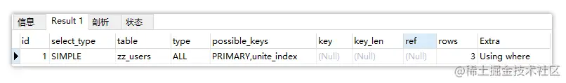

建立索引的正确姿势与使用索引的最佳指南
(五)MySQL索引应用篇：建立索引的正确姿势与使用索引的最佳指南！
引言
数据库索引，绝对是MySQL的核心功能之一，如果没有索引机制的数据库，那数据的检索效率绝对是令人无法接受的，毕竟没有索引的表数据，就如同一个普通的文本文件存储在磁盘中。在《索引上篇》中，我们对于MySQL提供的索引机制，从引入，到创建、使用、分类、管理….等进行了全面阐述，相信经过上一篇的讲解后，大家对MySQL索引机制建立了系统化的认知，而本篇则会以上篇为基础，对索引机制进一步加深掌握。
不过在上篇中虽对数据库索引机制有了完善认知，但还不够，因为上篇仅是单纯的认知阶段，能否真正的在实际项目中运用好索引机制，还需要具备丰富的经验以及一些原则与方法论，比如下述一些关于索引的问题：
- 索引虽然能给
MySQL检索数据的效率带来质的飞跃，但加入索引未带来新问题吗？ - 既然索引能够提升查询性能，那是不是为表中每个字段建立索引，性能会更好？
- 一张数据表中，那些类型的字段不适合建立索引呢？又是因为什么原因呢？
- 表中会存在大量的字段，但其中那些字段建立索引才能够最大的性能收益呢？
MySQL提供的索引种类也不少，一个字段上建立什么类型的索引才最好呢？- 当表中存在多个索引时，一条查询
SQL有多条路径可走，此时走哪条索引最好？ .......
对于这些问题，如果仅靠上篇索引的知识，相信是很难回答具体的，那在本篇中，则重点讲解索引应用相关的方式方法，例如各索引优劣分析、建立索引的原则、使用索引的指南以及索引失效与索引优化等内容。
一、MySQL各索引的优劣分析
首先来聊聊索引机制带来的利害关系，有句古话曾说过：“凡事有利必有弊”，而MySQL的索引机制也不例外，引入索引机制后，能够给数据库带来的优势很明显：
- ①整个数据库中，数据表的查询速度直线提升，数据量越大时效果越明显。
- ②通过创建唯一索引，可以确保数据表中的数据唯一性，无需额外建立唯一约束。
- ③在使用分组和排序时，同样可以显著减少
SQL查询的分组和排序的时间。 - ④连表查询时，基于主外键字段上建立索引，可以带来十分明显的性能提升。
- ⑤索引默认是
B+Tree有序结构，基于索引字段做范围查询时，效率会明显提高。 - ⑥从
MySQL整体架构而言，减少了查询SQL的执行时间，提高了数据库整体吞吐量。
看着上面一条又一条的好处，似乎感觉索引好处很大啊，对于这点确实毋庸置疑，但只有好处吗？No，同时也会带来一系列弊端，如：
- ①建立索引会生成本地磁盘文件，需要额外的空间存储索引数据，磁盘占用率会变高。
- ②写入数据时，需要额外维护索引结构，增、删、改数据时，都需要额外操作索引。
- ③写入数据时维护索引需要额外的时间开销，执行写
SQL时效率会降低，性能会下降。
当然，但对数据库整体来说，索引带来的优势会大于劣势。不过也正由于索引存在弊端，因此索引不是越多越好，合理建立索引才是最佳选择。
在上篇聊过，
MySQL的索引也会分为多种类型，每个类型的索引多多少少都存在一些弊端，接下来聊聊其他类型的索引。
1.1、主键索引存在的陷阱
相信大家数据库的表中，主键一般都是使用自增ID，但这是为什么呢？有人可能会回答自增ID不会重复，确保了主键唯一性。这样也确实没错，但不会重复的又不仅仅只有自增ID，比如我使用随机的UUID也不会重复，为何不使用UUID呢？这是由于索引存在一个陷阱！
众所周知，一张表中大多数情况下，会将主键索引以聚簇的形式存在磁盘中，上篇文章也聊到过，聚簇索引在存储数据时，表数据和索引数据是一起存放的。同时，
MySQL默认的索引结构是B+Tree，也就代表着索引节点的数据是有序的。
此时结合上面给出的一些信息，主键索引是聚簇索引，表数据和索引数据在一块、索引结构是有序的，那再反推前面给出的疑惑，为何不使用UUID呢？因为UUID是无序的，如果使用UUID作为主键，那么每当插入一条新数据，都有可能破坏原本的树结构，如下：
 比如上图中的灰色节点，是一条新插入的数据，此时经过计算后，应该排第二个位置，那就代表着后面的三个节点需要移动，然后给灰色节点挪出一个位置存储，从而确保索引的有序性。
比如上图中的灰色节点，是一条新插入的数据，此时经过计算后，应该排第二个位置，那就代表着后面的三个节点需要移动，然后给灰色节点挪出一个位置存储，从而确保索引的有序性。
这里只是伪逻辑，目的是用于举例演示，实际上
B+树索引结构不长这样，在《索引原理篇》会重新说一下这个点的。
由于主键索引是聚簇索引，因此上述案例中，当后续节点需要挪动时，也就代表着还需要挪动表数据，如果是偶尔需要移动还行，但如果主键字段值无序，那代表着几乎每次插入都有可能导致树结构要调整。
但使用自增
ID就不会有这个问题，所有新插入的数据都会放到最后。
因此大家数据表的主键，最好选用带顺序性的值，否则有可能掉入主键索引的“陷阱”中。
1.2、联合索引存在的矛盾
为了多条件查询时的效率更高，一般都会同时对多个字段建立联合索引，但之前也聊到过，联合索引存在一个致命的问题，比如在用户表中，通过id、name、age三个字段建立一个联合索引，此时来了一条查询SQL，如下：
|
|
而这条SQL语句是无法使用联合索引的，为什么呢？因为查询条件中，未包含联合索引的第一个字段，想要使用联合索引，那么查询条件中必须包含索引的第一个字段，如下：
|
|
上面这条SQL才是能命中多列索引的语句，因此在建立索引时也需要考虑这个问题，确保建立出的联合索引能够命中率够高。
1.3、前缀索引存在的弊端
前缀索引的特点是短小精悍，我们可以利用一个字段的前N个字符创建索引，以这种形式创建的索引也被称之为前缀索引，相较于使用一个完整字段创建索引，前缀索引能够更加节省存储空间，当数据越多时，带来的优势越明显。
不过前缀索引虽然带来了节省空间的好处，但也正由于其索引节点中，未存储一个字段的完整值，所以
MySQL也无法通过前缀索引来完成ORDER BY、GROUP BY等分组排序工作，同时也无法完成覆盖扫描等操作。
1.4、全文索引存在的硬伤
之前做模糊查询时，通常都会使用like%语法，不过这种方式虽然能够实现效果，但随着表越来越大，数据越来越多时，其性能会出现明显下降，而全文索引的推出则能够完美解决该问题，可以利用全文索引代替like%语法实现模糊查询，它的性能会比like%快上N倍。
全文索引虽然可以实现模糊查询，但也存在一系列硬伤，一起来看看。
①由于全文索引是基于分词实现的，所以对一个字段建立全文索引后，MySQL会对该字段做分词处理，这些分词结果也会被存储在全文索引中，因此全文索引的文件会额外的大！
②由于全文索引对每个字段值都会做分词，因此当修改字段值后，分词是需要时间的，所以修改字段数据后不会立马自动更新全文索引，此时需要咱们写存储过程，并调用它手动更新全文索引中的数据。
③除开上述两点外，全文索引最大的硬伤在于对中文支持不够友好，类似于英文可以直接通过符号、空格来分词，但中文呢？一个词语来形容就是博大精深，无法精准的对一段文字做分词，因此全文索引在检索中文时，存在些许精准度问题。
因此如果你项目规模较大，通常再引入
ElasticSearch、Solr、MeiliSearch等搜索引擎是一个更佳的选择。
1.5、唯一索引存在的快慢问题
唯一索引有个很大的好处，就是查询数据时会比普通索引效率更高，因为基于普通索引的字段查询数据，例如：
|
|
假设COLUMN_XX字段上建立了一个普通索引，此时基于这个字段查询数据时，当查询到一条COLUMN_XX = "XX"的数据后，此时会继续走完整个索引树，因为可能会存在多条字段值相同的数据。
但如果
COLUMN_XX字段上建立的是唯一索引，当找到一条数据后就会立马停下检索，因此本身建立唯一索引的字段值就具备唯一性。
因此唯一索引查询数据时，会比普通索引快上一截，但插入数据时就不同了，因为要确保数据不重复，所以插入前会检查一遍表中是否存在相同的数据。但普通索引则不需要考虑这个问题，因此普通索引的数据插入会快一些。
1.6、哈希索引的致命问题
哈希索引，也就是数据结构为Hash类型的索引，不过估计大家接触的比较少，毕竟创建索引时都默认用的B+树结构。但要比起查询速度，哈希索引绝对是MySQL中当之无愧的魁首！因为采用哈希结构的索引，会以哈希表的形式存储索引字段值，当基于该字段查询数据时，只需要经过一次哈希计算就可获取到数据。
但哈希结构的致命问题在于无序，也就是无法基于哈希索引的字段做排序、分组等工作。
因此如果你确定一个表中，不会做排序这类的工作，那可以适当选用哈希结构作为索引的数据结构，它会给你带来意想不到的性能收益~
二、建立索引的正确姿势
经过上述一系列分析后，简单讲明了每种索引类型存在的缺陷问题，但这跟我们本篇有啥关系呢？其实关系很大，因为只有当你了解了每种索引存在的劣势，才能更好的考虑并设计出合理的索引，而不是一股脑的盲目创建索引。
那么在创建索引时，咱们应当遵守那些原理原则，才能创建出合理的索引呢？
在实际项目场景中，当SQL查询性能较慢时，我们常常会有一个疑惑：表中哪个字段建立一个索引能带来最大的性能收益呢？一般来说，判断字段是否要添加的索引的依据，是看这个字段是否被经常当做查询条件使用，但也不能光依靠这一个依据来判断，比如用户表中的性别字段，就会经常被用做查询条件，但如果对性别字段建立一个索引，那对查询的性能提升并不大，因为性别就两个值：男/女（不包含泰国在内），那对其建立索引，索引文件中就只会有两个索引节点，大致情况如下：
这种情况下，为性别建立一个索引，带来的性能收益显然不是太大。同时，上图中给出的案例，也不是索引真正的样子，如果表中存在主键索引或聚簇索引，对其他字段建立的索引，都是次级索引，也被称为辅助索引，其节点上的值，存储的并非一条完整的行数据，而是指向聚簇索引的索引字段值。
如果基于辅助索引查询数据，最终数据会以何种方式被检索出来，这里就牵扯到
MySQL中的一个新概念，也就是SQL执行时的回表问题。
2.1、索引查询时的回表问题
什么叫做回表呢？意思就是指一条SQL语句在MySQL内部，要经过两次查询过程才能获取到数据。这是跟索引机制有关的，先来看看索引在MySQL内部真正的面貌：
在上图用户表中，基于ID字段先建立了一个主键索引，然后又基于name字段建立了一个普通索引，此时MySQL默认会选用主键索引作为聚簇索引，将表数据和主键索引存在同一个文件中，也就是主键索引的每个索引节点，都直接对应着行数据。而基于name字段建立的索引，其索引节点存放的则是指向聚簇索引的ID值。
在这种情况下，假设有一条下述
SQL，其内部查询过程是啥样的呢？
|
|
首先会走name字段的索引，然后找到对应的ID值，然后再基于查询到的ID值，再走ID字段的主键索引，最终得到一整条行数据并返回。
在这个案例中，一条查询
SQL经历了两次查询才获取到数据，这个过程则被称之为回表。
回表动作会导致额外的查询开销，因此尽量可以基于主键做查询，如果实在需要使用非主键字段查询，那么尽量要写明查询的结果字段，而并非使用*。
当然，实际情况中建立联合索引，利用索引覆盖特性，从而避免使用辅助索引，这样也能够消除回表动作，但关于这点后面再聊，先来说说建立索引需要遵循的一些原则。
2.2、建立索引时需要遵守的原则
前面说过一点，当建立索引仅考虑一个字段是否被经常用于查询是不够的，往往一个合适的索引需要更为细致与长远的思考，例如使用多个字段建立是否会更好？创建其他类型的索引性能是否会更佳？下面我们就一起来看看建立索引时，需要遵守的一些原则：
- ①经常频繁用作查询条件的字段应酌情考虑为其创建索引。
- ②表的主外键或连表字段，必须建立索引，因为能很大程度提升连表查询的性能。
- ③建立索引的字段，一般值的区分性要足够高，这样才能提高索引的检索效率。
- ④建立索引的字段，值不应该过长，如果较长的字段要建立索引，可以选择前缀索引。
- ⑤建立联合索引，应当遵循最左前缀原则，将多个字段之间按优先级顺序组合。
- ⑥经常根据范围取值、排序、分组的字段应建立索引，因为索引有序，能加快排序时间。
- ⑦对于唯一索引，如果确认不会利用该字段排序，那可以将结构改为
Hash结构。 - ⑧尽量使用联合索引代替单值索引，联合索引比多个单值索引查询效率要高。
同时，除开上述一些建立索引的原则外，在建立索引时还需有些注意点：
- ❶值经常会增删改的字段，不合适建立索引，因为每次改变后需维护索引结构。
- ❷一个字段存在大量的重复值时，不适合建立索引，比如之前举例的性别字段。
- ❸索引不能参与计算，因此经常带函数查询的字段，并不适合建立索引。
- ❹一张表中的索引数量并不是越多越好，一般控制在
3，最多不能超过5。 - ❺建立联合索引时，一定要考虑优先级，查询频率最高的字段应当放首位。
- ❻当表的数据较少，不应当建立索引，因为数据量不大时，维护索引反而开销更大。
- ❼索引的字段值无序时，不推荐建立索引，因为会造成页分裂，尤其是主键索引。
对于索引机制，在建立时应当参考上述给出的意见，这每一条原则都是从实际经验中总结出来的，前面八条不一定要全面思考，但后面七条注意点，一定要牢记，如若你的索引符合后面七条中的描述，那一定要更改索引。
对于每一条建议是为什么，在后面的《索引原理篇》讲完之后大家就会彻底理解，这里就不展开叙述了，接下来重点聊一下联合索引，以及它的最左前缀原则。
2.3、联合索引的最左前缀原则
首先在讲最左前缀原则之前，先看看上述给出的一条原则：
- ⑧尽量使用联合索引代替单值索引，联合索引比多个单值索引查询效率要高。
对于这一点是为什么呢？举个栗子理解，比如此时基于X、Y、Z字段建立了一个联合索引，实际上也相当于建立了三个索引：X、X、Y、X、Y、Z，因此只要查询中使用了这三组字段，都可以让联合索引生效。
但如若查询中这三个字段不以
AND形式出现，而是单独作为查询条件出现，那单值索引性能会好一些，但三个不同的索引，维护的代价也会高一些。
其实联合索引的最左前缀原则，道理很简单的，就是组成联合索引的多个列，越靠左边优先级越高，同时也只有SQL查询条件中，包含了最左的字段，才能使用联合索引，例如：
|
|
上面这条SQL就显然并不会使用联合索引，因为不符合最左前缀原则，最左侧的X字段未曾被使用。也正由于MySQL在使用联合索引时会遵循最左前缀原则，所以才在前面建立索引的建议中给出了一条：
- ❺建立联合索引时，一定要考虑优先级，查询频率最高的字段应当放首位。
因为将查询频率越高的字段放首位，就代表着查询时命中索引的几率越大。同时，MySQL的最左前缀原则，才匹配到范围查询时会停止匹配，比如>、<、between、like这类范围条件，并不会继续使用联合索引，举个栗子：
|
|
当执行时，虽然上述SQL使用到X、Y、Z作为查询条件，但由于Y字段是>范围查询，因此这里只能使用X索引，而不能使用X、Y或X、Y、Z索引。
对于一条查询
SQL是否用到了索引，或者一条查询SQL到底用了那个索引，其实可以通过MySQL自带的explain工具分析（后续讲解）。
最后再来一个简单的栗子，加深一下对于联合索引的认知：
|
|
比如上述这个案例中，对于这两条SQL选第一种方式创建索引，还是第二种呢？答案是B，因为两条sql完全能够利用到第二个创建的联合索引。
|
|
同时选B建立联合索引后，如上两条SQL都会利用到上面创建的联合索引，SQL是否走索引查询跟where后的条件顺序无关，因为MySQL优化器会优化，对SQL查询条件进行重排序。
三、索引失效与使用索引的正确姿势
相信这一点大家看了有些懵，啥叫使用索引的正确姿势？索引不是MySQL执行SQL时自动选择的吗？我们只能建立索引，怎么使用啊？其实这里是指我们编写SQL时，要注意的点，毕竟MySQL查询时到底使不使用索引，这完全取决于你编写的SQL。
但很多小伙伴在平时写
SQL的时候，一般只追求实现业务功能，只要能够查询出相应的数据即可，压根不会过度考虑这条SQL应用到索引，那么这里就是给出一些经验之谈，讲清楚几点写SQL时的方法论。
其实索引本身是一把双刃剑，用的好能够给我们带来异乎寻常的查询效率，用的不好则反而会带来额外的磁盘占用及写入操作时的维护开销。因此大家一定要切记，既然选择建了索引，那一定要利用它，否则还不如干脆别建，既能节省磁盘空间，又能提升写入效率。
3.1、索引失效的那些事儿
想要用好索引，那一定要先搞清楚那些情况会导致索引失效，弄明白这些事项之后，在写SQL的时候刻意避开，那你写出来的SQL十有八九是会用到索引的，那么在数据库中那些情况下会导致索引失效呢？下面一起来聊一聊，但单纯的讲概念会有种纸上谈兵的感觉，因此下面简单的举个案例，然后来说明索引失效的一些情况。
|
|
此时对这张用户表，分别创建两个索引，第一个是基于user_id创建的主键索引，第二个是使用user_name、user_sex、password三个字段创建的联合索引。
但想要查看一条
SQL是否使用了索引，需要用到一个自带的分析工具ExPlain，下面简单介绍一下。
3.1.1、执行分析工具 - ExPlain
这里就对explain工具做一个简单介绍，后续《SQL优化篇》会详细讲解这个工具，先来看看这个工具/命令的作用，当在一条SQL前加上explain命令，执行这条SQL后会列出所有的执行方案：
|
|
-
id：这是执行计划的ID值，这个值越大，表示执行的优先级越高。 -
1select_type：当前查询语句的类型，有如下几个值：
simple：简单查询。primary：复杂查询的外层查询。subquery：包含在查询语句中的子查询。derived：包含在FROM中的子查询。
-
table：表示当前这个执行计划是基于那张表执行的。 -
1type：当前执行计划查询的类型，有几种情况：
all：表示走了全表查询，未命中索引或索引失效。system：表示要查询的表中仅有一条数据。const：表示当前SQL语句的查询条件中，可以命中索引查询。range：表示当前查询操作是查某个区间。eq_ref：表示目前在做多表关联查询。ref：表示目前使用了普通索引查询。index：表示目前SQL使用了辅助索引查询。
-
possible_keys：执行SQL时，优化器可能会选择的索引（最后执行不一定用）。 -
key：查询语句执行时，用到的索引名字。 -
key_len：这里表示索引字段使用的字节数。 -
ref：这里显示使用了那种查询的类型。 -
rows：当前查询语句可能会扫描多少行数据才能检索出结果。 -
1Extra：这里是记录着额外的一些索引使用信息，有几种状态：
using index：表示目前使用了覆盖索引查询（稍后讲）。using where：表示使用了where子句查询，通常表示没使用索引。using index condition：表示查询条件使用到了联合索引的前面几个字段。using temporary：表示使用了临时表处理查询结果。using filesort：表示以索引字段之外的方式进行排序，效率较低。select tables optimized away：表示在索引字段上使用了聚合函数。
对于上述这么多的字段，其实目前不需要完全弄懂，本文只需要记住里面的type字段即可，all表示走全表扫描，const、ref...表示通过索引查询。
下面一起来聊一聊索引失效的一些场景。
3.1.2、查询中带有OR会导致索引失效
|
|
例如上述这条SQL，其中既包含了主键索引的字段，又包含了联合索引的第一个字段，按理来说是会走索引查询的对吗？但看看执行结果：

从结果中可看到type=ALL，显然并未使用索引来查询，也就代表着，虽然所有查询条件都包含了索引字段，但由于使用了OR，最终导致索引失效。
3.1.3、模糊查询中like以%开头导致索引失效
众所周知，使用like关键字做模糊查询时，是可以使用索引的，那来看看下述这条SQL：
|
|
在这条SQL中以联合索引中的第一个字段作为了查询条件，此时会使用索引吗？看看结果：
结果中显示依旧走了全表扫描，并未使用索引，但like不以%开头，实际上是不会导致索引失效的，例如：
在这里以%结尾，其实可以使用联合索引来检索数据，并不会导致索引失效。
3.1.4、字符类型查询时不带引号导致索引失效
|
|
上述这条SQL按理来说是没有半点问题的，目前是符合联合索引的最左匹配原则的，但来看看结果：
从结果中很明显的可以看出，由于user_name是字符串类型的，因此查询时没带引号，竟然直接未使用索引，导致了索引失效（上面也放了对比图，大家可以仔细看看区别)。
3.1.5、索引字段参与计算导致索引失效
|
|
上面这条SQL看着估计有些懵，但实际上很简单，就是查询ID=2的数据，理论上因为查询条件中使用了主键字段，应该会使用主键索引，但结果呢？
由于索引字段参与了计算，所以此时又导致了索引失效，因此大家要切记，千万不要让索引字段在SQL中参与计算，也包括使用一些聚合函数时也会导致索引失效，其根本原因就在于索引字段参与了计算导致的。
这里的运算也包括
+、-、*、/、!.....等一系列涉及字段计算的逻辑。
3.1.6、字段被用于函数计算导致索引失效
|
|
上述中，我们使用SUBSTRING函数对user_name字段进行了截取，然后再用于条件查询，此时看看执行结果：
很显然，并未使用索引查询，这也是意料之中的事情，毕竟这一条和3.1.5的原因大致相同，索引字段参与计算导致失效。
3.1.7、违背最左前缀原则导致索引失效
|
|
上述这条SQL中，显然用到了联合索引中的性别和密码字段，此时再看看结果：
由于违背了联合索引的最左前缀原则，因为没使用最左边的user_name字段，因此也导致索引失效，从而走了全表查询。
3.1.8、不同字段值对比导致索引失效
从一张表中查询出一些值，然后根据这些值去其他表中筛选数据，这个业务也是实际项目中较为常见的场景，下面为了简单实现，就简单用姓名和性别模拟一下字段对比的场景：
|
|
按理来说，因为user_name属于联合索引的第一个字段，所以上述这条SQL中规中矩，理论上会走索引的，但看看结果：
显然，这个场景也会导致索引无法使用，因此之后也要切记这点。
3.1.9、反向范围操作导致索引失效
一般来说，如果SQL属于正向范围查询，例如>、<、between、like、in...等操作时，索引是可以正常生效的，但如果SQL执行的是反向范围操作，例如NOT IN、NOT LIKE、IS NOT NULL、!=、<>...等操作时，就会出现问题，例如：
|
|
上述SQL的意思很简单，也就是查询user_id不是1,2,3的数据，这里是基于主键索引字段user_id查询的，但会走索引吗？来看看结果：
结果也很明显，使用NOT关键字做反向范围查询时，并不会走索引，索引此时失效了，但是做正向范围查询时，索引依旧有效。
对于这一点，其实大家可以慢慢实验，并非所有的正向范围操作都会走索引，例如
IS NULL就不会走，它的反向操作：IS NOT NULL同样不会走。
3.1.10、索引失效小结
在MySQL中还有一种特殊情况会导致索引失效，也就是当走索引扫描的行数超过表行数的30%时，MySQL会默认放弃索引查询，转而使用全表扫描的方式检索数据，因此这种情况下走索引的顺序磁盘IO，反而不一定有全表的随机磁盘IO快。
还有一点要牢记：关于索引是否会失效，实际上也跟索引的数据结构、
MySQL的版本、存储引擎的不同有关，例如一条SQL语句在B+Tree索引中会导致索引失效，但在哈希索引中却不会（好比IS NULL/IS NOT NULL），这种情况在不同版本、不同引擎中都有可能会体现出来。
但到目前为止，大致上已经将MySQL中会导致索引失效的几种情况罗列说明了，接下来一起看看使用索引的正确姿势！
3.2、使用索引的正确姿势
其实到这里，对于如何使用索引才是正确的呢？总结如下：
- ①查询
SQL中尽量不要使用OR关键字，可以使用多SQL或子查询代替。 - ②模糊查询尽量不要以
%开头，如果实在要实现这个功能可以建立全文索引。 - ③编写
SQL时一定要注意字段的数据类型，否则MySQL的隐式转换会导致索引失效。 - ④一定不要在编写
SQL时让索引字段执行计算工作，尽量将计算工作放在客户端中完成。 - ⑤对于索引字段尽量不要使用计算类函数，一定要使用时请记得将函数计算放在
=后面。 - ⑥多条件的查询
SQL一定要使用联合索引中的第一个字段，否则会打破最左匹配原则。 - ⑦对于需要对比多个字段的查询业务时，可以拆分为连表查询，使用临时表代替。
- ⑧在
SQL中不要使用反范围性的查询条件，大部分反范围性、不等性查询都会让索引失效。 - ⑨
.......
实际上无非就是根据前面给出的索引失效情况，尽量让自己编写的SQL不会导致索引失效即可，写出来的SQL能走索引查询，那就能在很大程度上提升数据检索的效率。
不过这些也属于
SQL优化的内容，因此更多、更具体的SQL编写准则，会在之后的《SQL调优篇》详细讲解。
接下来再重点讲几个较重要的内容，既索引覆盖、索引下推、Multi-Range Read机制、索引跳跃式扫描机制。
3.2.1、索引覆盖
在之前聊到过，由于表中只能存在一个聚簇索引，一般都为主键索引，而建立的其他索引都为辅助索引，包括联合索引也例外，最终索引节点上存储的都是指向主键索引的值，拿前面的用户表为例：
|
|
虽然这条SQL会走联合索引查询，但是基于联合索引查询出来的值仅是一个指向主键索引的ID，然后会拿着这个ID再去主键索引中查一遍，这个过程之前聊过，被称为回表过程。
那么回表问题无法解决吗？必须得经过两次查询才能得到数据吗？答案并非如此。
比如假设此时只需要user_name、user_sex、password这三个字段的信息，此时SQL语句可以更改为如下情况：
|
|
此时将SQL更改为查询所需的列后，就不会发生回表现象，Why？再这里很多小伙伴可能会疑惑，这是什么道理啊？因为此时所需的user_name、user_sex、password三个字段数据，在联合索引中完全包含，因此可以直接通过联合索引获取到数据。
但如果查询时用
*，因为联合索引中不具备完整的一行数据，只能再次转向聚簇索引中获取完整的行数据，因此到这里大家应该也明白了为什么查询数据时，不能用*的原因，这是因为会导致索引覆盖失效，造成回表问题。
当然，再来提一点比较有意思的事情，先看SQL：
|
|
比如上述这条SQL，显然是不符合联合索引的最左前缀匹配原则的，但来看看执行结果：
这个结果是不是很令你惊讶，通过EXPLAIN分析的结果显示，这条SQL竟然使用了索引，这是什么原因呢？也是因为索引覆盖。
一句话概述：就是要查询的列，在使用的索引中已经包含，被所使用的索引覆盖，这种情况称之为索引覆盖。
3.2.2、索引下推
索引下推是MySQL5.6版本以后引入的一种优化机制，还是以之前的用户表为例，先来看一条SQL语句：
|
|
首先为了更加直观的讲清楚索引下推，因此先再向用户表中增加一条数据。然后再来看看后面的查询SQL，这条SQL会使用联合索引吗？答案是会的，但只能部分使用，因为联合索引的每个节点信息大致如下：
|
|
由于前面使用的是模糊查询，但%在结尾，因此可以使用竹这个字作为条件在联合索引中查询，整个查询过程如下：
- ①利用联合索引中的
user_name字段找出「竹子、竹竹」两个索引节点。 - ②返回索引节点存储的值「
2、5」给Server层，然后去逐一做回表扫描。 - ③在
Server层中根据user_sex="男"这个条件逐条判断，最终筛选到「竹子」这条数据。
有人或许会疑惑，为什么user_sex="男"这个条件不在联合索引中处理呢？因为前面是模糊查询，所以拼接起来是这样的：竹x男，由于这个x是未知的，因此无法根据最左前缀原则去匹配数据，最终这里只能使用联合索引中user_name字段的一部分，后续的user_sex="男"还需要回到Server层处理。
那什么又叫做索引下推呢？也就是将
Server层筛选数据的工作，下推到引擎层处理。
以前面的案例来讲解，MySQL5.6加入索引下推机制后，其执行过程是什么样子的呢？
- ①利用联合索引中的
user_name字段找出「竹子、竹竹」两个索引节点。 - ②根据
user_sex="男"这个条件在索引节点中逐个判断，从而得到「竹子」这个节点。 - ③最终将「竹子」这个节点对应的「
2」返回给Server层，然后聚簇索引中回表拿数据。
相较于没有索引下推之前，原本需要做「2、5」两次回表查询，但在拥有索引下推之后，仅需做「2」一次回表查询。
索引下推在
MySQL5.6版本之后是默认开启的，可以通过命令set optimizer_switch='index_condition_pushdown=off|on';命令来手动管理。
3.2.3、MRR(Multi-Range Read)机制
Multi-Range Read简称为MRR机制，这也是和索引下推一同在MySQL5.6版本中引入的性能优化措施，那什么叫做MRR优化呢？
一般来说，在实际业务中我们应当尽量通过索引覆盖的特性，减少回表操作以降低
IO次数，但在很多时候往往又不得不做回表才能查询到数据，但回表显然会导致产生大量磁盘IO，同时更严重的一点是：还会产生大量的离散IO，下面举个例子来理解。
|
|
上述这条SQL所做的工作很简单，就是在学生成绩表中查询所有成绩未及格的学生信息，假设成绩字段上存在一个普通索引，那思考一下，这条SQL的执行流程是什么样的呢？
- ①先在成绩字段的索引上找到
0分的节点，然后拿着ID去回表得到成绩零分的学生信息。 - ②再次回到成绩索引，继续找到所有
1分的节点，继续回表得到1分的学生信息。 - ③再次回到成绩索引，继续找到所有
2分的节点…… - ④周而复始，不断重复这个过程，直到将
0~59分的所有学生信息全部拿到为止。
那此时假设此时成绩0~5分的表数据，位于磁盘空间的page_01页上，而成绩为5~10分的数据，位于磁盘空间的page_02页上，成绩为10~15分的数据，又位于磁盘空间的page_01页上。此时回表查询时就会导致在page_01、page_02两页空间上来回切换，但0~5、10~15分的数据完全可以合并，然后读一次page_01就可以了，既能减少IO次数，同时还避免了离散IO。
而
MRR机制就主要是解决这个问题的，针对于辅助索引的回表查询，减少离散IO，并且将随机IO转换为顺序IO，从而提高查询效率。
那MRR机制具体是怎么做的呢？MRR机制中，对于辅助索引中查询出的ID，会将其放到缓冲区的read_rnd_buffer中，然后等全部的索引检索工作完成后，或者缓冲区中的数据达到read_rnd_buffer_size大小时，此时MySQL会对缓冲区中的数据排序，从而得到一个有序的ID集合：rest_sort，最终再根据顺序IO去聚簇/主键索引中回表查询数据。
1SET @@optimizer_switch='mrr=on|off,mrr_cost_based=on|off';
可以通过上述这条命令开启或关闭MRR机制，MySQL5.6及以后的版本是默认开启的。
3.2.4、Index Skip Scan索引跳跃式扫描
在讲联合索引时，咱们提到过最左前缀匹配原则，也就是SQL的查询条件中必须要包含联合索引的第一个字段，这样才能命中联合索引查询，但实际上这条规则也并不是100%遵循的。因为在MySQL8.x版本中加入了一个新的优化机制，也就是索引跳跃式扫描，这种机制使得咱们即使查询条件中，没有使用联合索引的第一个字段，也依旧可以使用联合索引，看起来就像跳过了联合索引中的第一个字段一样，这也是跳跃扫描的名称由来。
但跳跃扫描究竟是怎么实现的呢？上个栗子快速理解一下。
比如此时通过(A、B、C)三个列建立了一个联合索引，此时有如下一条SQL：
|
|
按理来说，这条SQL既不符合最左前缀原则，也不具备使用索引覆盖的条件，因此绝对是不会走联合索引查询的，但思考一个问题，这条SQL中都已经使用了联合索引中的两个字段，结果还不能使用索引，这似乎有点亏啊对不？因此MySQL8.x推出了跳跃扫描机制，但跳跃扫描并不是真正的“跳过了”第一个字段，而是优化器为你重构了SQL，比如上述这条SQL则会重构成如下情况：
|
|
其实也就是MySQL优化器会自动对联合索引中的第一个字段的值去重，然后基于去重后的值全部拼接起来查一遍，一句话来概述就是：虽然你没用第一个字段，但我给你加上去，今天这个联合索引你就得用，不用也得给我用。
当然，如果熟悉
Oracle数据库的小伙伴应该知道，跳跃扫描机制在Oracle中早就有了，但为什么MySQL8.0版本才推出这个机制呢？还记得咱们在《MySQL架构篇》中的闲谈嘛？MySQL几经转手后，最终归到了Oracle旗下，因此跳跃扫描机制仅是Oracle公司：从Oracle搬到了“自己的MySQL”上而已。
但是跳跃扫描机制也有很多限制，比如多表联查时无法触发、SQL条件中有分组操作也无法触发、SQL中用了DISTINCT去重也无法触发…..，总之有很多限制条件，具体的可以参考《MySQL官网8.0-跳跃扫描》。
其实这个跳跃性扫描机制，只有在唯一性较差的情况下，才能发挥出不错的效果，如果你联合索引的第一个字段，是一个值具备唯一性的字段，那去重一次再拼接，几乎就等价于走一次全表。
最后，可以通过通过set @@optimizer_switch = 'skip_scan=off|on';命令来选择开启或关闭跳跃式扫描机制。当然，该参数仅限MySQL8.0以上的版本，如果在此之下的版本暂时就不用考虑了。
四、索引应用篇总结
至此，MySQL索引应用篇，也就是索引中篇就结束了，相信大家认真看完本篇之后，对于索引的掌握性、熟练程度绝对会更上一层楼，因为本章中从索引的优劣分析，到建立索引的原则、索引失效的情景、使用索引的正确姿势、MySQL对于索引的优化机制等各方面，对索引进行了进一步阐述。
经历中、上两篇的阐述后，对于
MySQL索引这个大体系已经建立出了完整的认知，下一篇就是《索引原理篇》啦，在中、上两篇中抛出了很多疑惑，都留在了索引原理篇中去分析，因为只有当你真正搞懂了索引的底层实现，才能更好的理解一些前面给出的建议、定论及概念。
当然，如果你认为我的文章对你有帮助，那可以动动发财的小手，点上一个免费的小赞赞~，点赞量足够多可加快《索引原理篇》的解锁进度，更文速度完全取决于诸位的点赞数量！当然，就算不给赞，《索引原理篇》也不会缺席噢！最后再给出两条关于索引的查询命令：
show status like '%Handler_read%';查看当前会话的索引使用情况。show global status like 'Handler_read%';：查询全局索引使用情况。
这两条命令在之后的《SQL调优篇》中会用到的，这些命令中的信息对于调优会有不小的参考价值，当然，对于详细的分析在后续的篇章中再详细讲解咯！